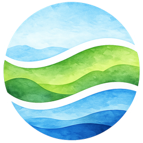

One Earth Partners ← Momentum for the Environment InitiativeA Global Assessment of the Loss of USAID's Environment and Climate Programming
Viewing inline requires a browser with a built-in PDF viewer (Chrome, Edge, Firefox, desktop Safari). If the report doesn't display above, use "Open PDF in new tab" instead.
The chat assistant runs on Chatling and GPT-4o, and is meant purely as a navigation aid for exploring this report, not a replacement for reading it directly.